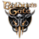
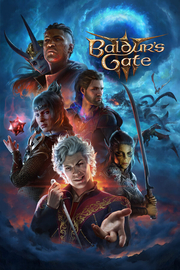

 Baldur's Gate 3
Detalles
|  | |
| Tiempo de juego | No Jugado |
| Última actividad | Nunca |
| Añadido | 11/6/2024 15:35:16 |
| Modificado | 11/8/2024 17:40:52 |
| Estado de finalización | No Jugado |
| Librería | Playnite |
| Fuente | 2TB GAS |
| Plataforma | PC (Windows) |
| Fecha de lanzamiento | 7/29/2023 |
| Puntuación de la Comunidad | 96 |
| Puntuación de la Crítica | 96 |
| Puntuación de usuario | |
| Género | Aventura Estrategia Rol |
| Desarrollador | Larian Studios |
| Editor | Larian Studios |
| Característica | Cloud Saves Compat. Total Con Mando Cooperativo Cooperativo En LAN Cooperativo En Línea Logros De Multijugador Préstamo Familiar Remote Play En TV Remote Play Together Un Jugador |
| Enlaces | Punto de encuentro Discusiones Guías Noticias Página de la tienda PCGamingWiki Logros |
| Tag | Aventura Basados en clases Buena trama Campañas cooperativas Combate Combate por turnos Contenido sexual Cooperativos en línea Desnudos Dragones y Mazmorras Estrategia Fantasía Fantasía oscura Las elecciones importan Multijugador Personalización de personajes Rol Rol clásico Romance Un jugador |
Descripción

Reúne a tu grupo y regresa a los Reinos Olvidados en una historia de compañerismo, traición, sacrificio, supervivencia y la atracción de un poder absoluto.
Unas misteriosas aptitudes empiezan a surgir en tu interior por obra de un parásito de los azotamentes que te han implantado en el cerebro. Resístete y vuelve a la oscuridad contra sí misma o abraza la corrupción y conviértete en el mal supremo.
De manos de los creadores de Divinity: Original Sin 2, llega un juego de rol para la nueva generación de consolas, ambientado en el mundo de Dungeons & Dragons.

Elige entre 12 clases y 11 razas del manual de jugador de D&D para crear tu propia identidad, o bien juega con un héroe con origen, que cuenta con su propio trasfondo. También puedes abrazar tu corrupción interior como el Ansia Oscura, un héroe con un origen completamente personalizable con sus propias mecánicas e historia. Elijas a quien elijas, prepárate para vivir aventuras, saquear, combatir y vivir romances a lo largo y ancho de los Reinos Olvidados y más allá. Reúne al grupo. Disfruta de la aventura online con un grupo de hasta cuatro jugadores.

Primero, te secuestran; luego, te infectan y, al final, te pierdes. Te estás convirtiendo en un monstruo, pero, a medida que la corrupción crece en tu interior, también crece tu poder. Ese poder puede ayudarte a sobrevivir, pero tendrás que pagar un precio. Con todo, tu mejor baza, más que cualquier habilidad, podrían ser los vínculos de confianza que establezcas con tu grupo. En medio de un conflicto entre diablos, deidades y siniestras fuerzas de otros mundos, juntos decidiréis el destino de los Reinos Olvidados.

En el corazón de Baldur's Gate 3 late el nuevo motor Divinity 4.0, que te ofrecerá una libertad sin precedentes para explorar, experimentar e interactuar en un mundo próspero repleto de personajes, peligros y engaños. Una grandiosa narrativa visual te acercará a los personajes más que nunca. Desde los bosques malditos por las sombras hasta las mágicas cavernas del Underdark, pasando por la propia ciudad en expansión de Puerta de Baldur... Tus acciones definirán la aventura, serán tus elecciones las que definirán tu legado. Pasarás a la historia.

Los Reinos Olvidados son un mundo gigantesco, lleno de detalles y con una gran diversidad, en el que podrás descubrir secretos en cada rincón. La verticalidad es una parte esencial de la exploración. Ve con sigilo, lánzate al agua, empuja, trepa y salta, desde lo más profundo del Underdark hasta los resplandecientes tejados de Puerta de Baldur. Cada decisión que tomes servirá para que avance la historia, y todas ellas dejarán huella en el mundo. Define tu legado, alimenta las relaciones de amistad, gánate enemigos y resuelve los problemas a tu manera. No hay dos partidas iguales.
- Modo multijugador online hasta para cuatro jugadores
Os permite combinar vuestras fuerzas en combate para atacar a los enemigos a la vez, o bien dividir el grupo para cumplir vuestras propias misiones y deseos. Trazad el plan perfecto todos juntos… o siembra el caos por tu cuenta cuando menos se lo esperen tus amigos. Las relaciones son complicadas; sobre todo, cuando tienes un parásito en el cerebro. - Personajes con origen
7 héroes con origen únicos que ofrecen una experiencia sumamente detallada y cuentan con rasgos, objetivos y puntos de vista sobre el mundo únicos. Sus historias se entrelazan con la narrativa general y tus elecciones determinarán si les espera la redención, la salvación, la dominación o algún otro de los muchos finales disponibles. Juega con un personaje con origen y disfruta de sus historias, o bien reclútalos para que luchen a tu lado. - Combate por turnos evolucionado
Basado en las reglas de la 5.ª edición de D&D. Una iniciativa por equipos, ventaja y desventaja, y modificadores a las tiradas se combinan con una IA avanzada, interacciones con el entorno ampliadas y una mayor fluidez en combate que recompensa la estrategia y la previsión. Los tres ajustes de dificultad te permitirán personalizar el desafío del combate. Activa los dados trucados para ayudarte a prosperar en combate, o bien usa el modo Estratega para una experiencia más compleja. - Una profundidad sin precedentes
Cuenta con 31 subrazas además de las 11 razas (humano, githyanki, semiorco, enano, elfo, drow, tiefling, mediano, semielfo, gnomo, dracónido), con 46 subclases derivadas de las 12 clases. Los más de 600 conjuros y acciones ofrecen una libertad casi ilimitada a nivel de interactividad; todo ello en un mundo artesanal en el que se recompensa la exploración y la intervención del jugador define el viaje. Nuestro creador de personajes único cuenta con una profundidad sin precedentes a nivel de personajes, con reacciones que aseguran que, seas quien seas, dejarás un legado a tu paso hasta llegar al nivel 12. Las más de 174 horas de secuencias de vídeo te aseguran que, independientemente de las decisiones que tomes, la experiencia cinematográfica te acompañará en tu viaje. ¡Cada partida será un nuevo viaje cinemático! - Romances complejos y profundos
Con una incipiente amenaza de guerra cerniéndose sobre Puerta de Baldur y una invasión de azotamentes en el horizonte, será inevitable (aunque no necesario) forjar amistades por el camino. Lo que les pase dependerá de ti, ya que tendrás relaciones reales e intensas con la gente que conozcas en tu viaje. Cada compañero tendrá su propia brújula moral y reaccionará a las elecciones que tomes a lo largo del viaje. ¿A qué precio te ceñirás a tus ideales? ¿Permitirás que sea el amor el que determine tus acciones? Las relaciones creadas de camino a Puerta de Baldur propiciarán momentos de relajación en el campamento, pero también tendrán un gran peso en las numerosas decisiones que tomarás a lo largo de tu aventura. - Personaliza tu experiencia para los streamings
Así, cuando estés en directo, tu retransmisión no se verá interrumpida por un oso, una palabra malsonante o la ausencia de ropa interior. Baldur's Gate 3 tiene 3 niveles diferentes de personalización para streamers. Podréis desactivar los desnudos y el contenido explícito de forma independiente (o todo junto), así como también podréis activar la integración de Twitch para interactuar directamente con vuestro público, exactamente igual que hacemos en nuestras presentaciones de Panel From Hell. Gracias a estas opciones, podréis retransmitir Baldur's Gate 3 sin problemas, independientemente de vuestra forma de jugar.